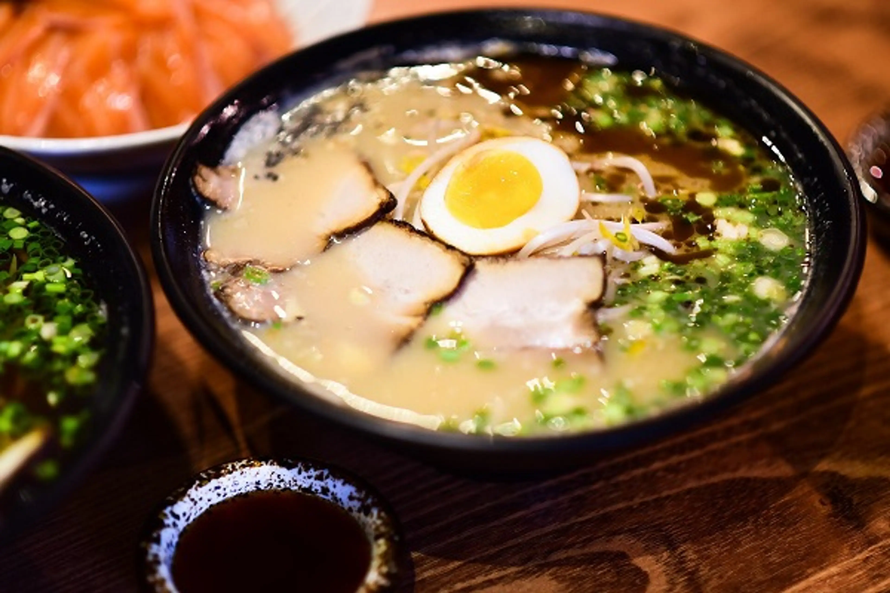

Tonkotsu Ramen
「豚骨ラーメン — La esencia cremosa del cerdo en su máxima expresión.」
El Tonkotsu Ramen nació en Hakata (Fukuoka). Su caldo espeso se elabora cociendo huesos de cerdo durante horas hasta liberar su colágeno natural, creando una textura aterciopelada y un sabor profundo y lleno de cuerpo.
Ingredientes
- Caldo de huesos de cerdo cocidos por más de 12 horas
- Fideos finos y firmes
- Cerdo chashu, ajo, cebollín y jengibre encurtido
Sabor
Intenso y cremoso, con gran profundidad umami.
Aroma
Rico, cálido y ligeramente ahumado.
Textura
Espesa, suave y reconfortante.